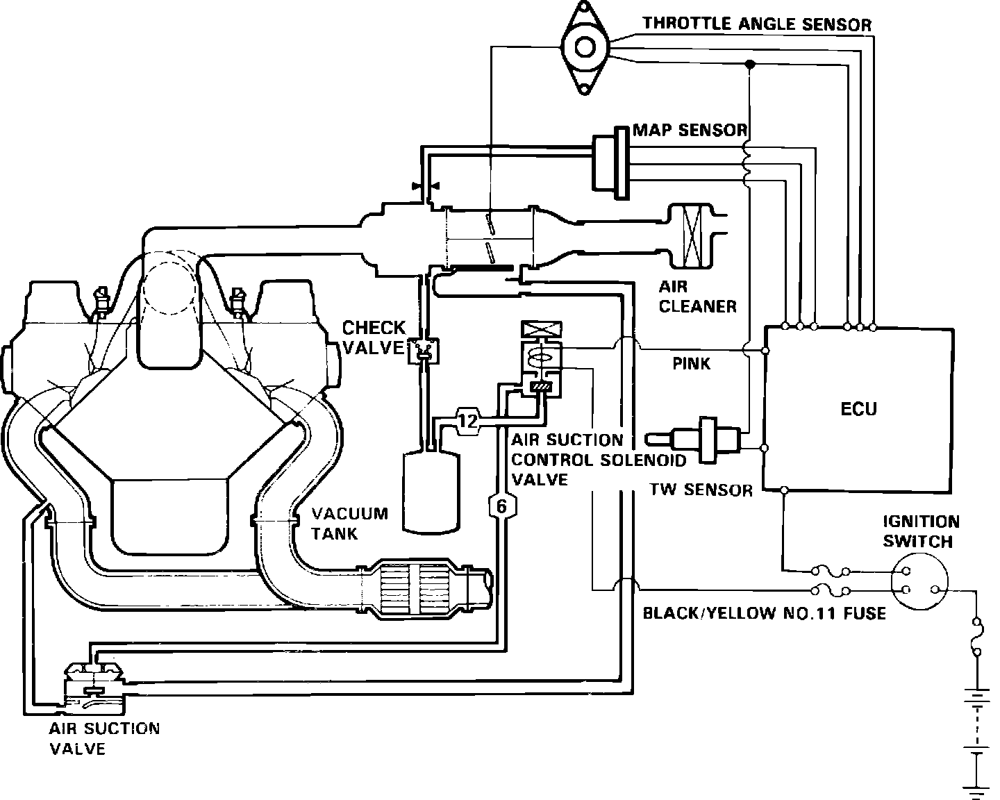
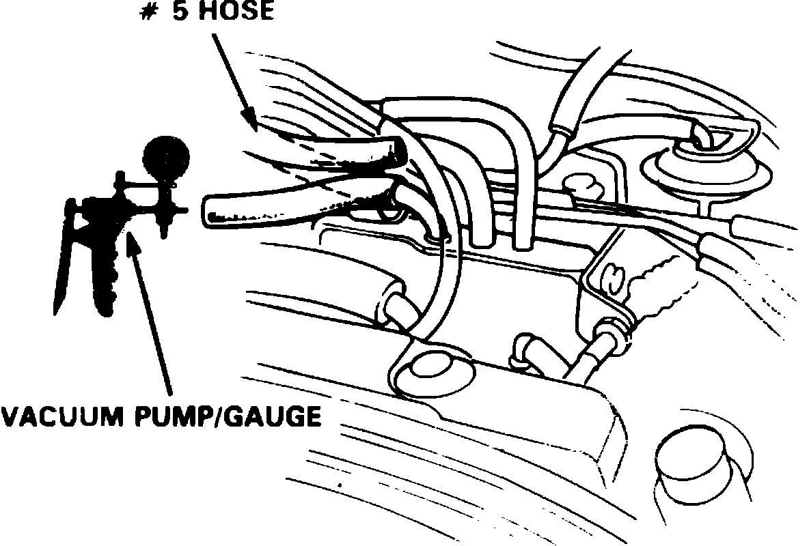
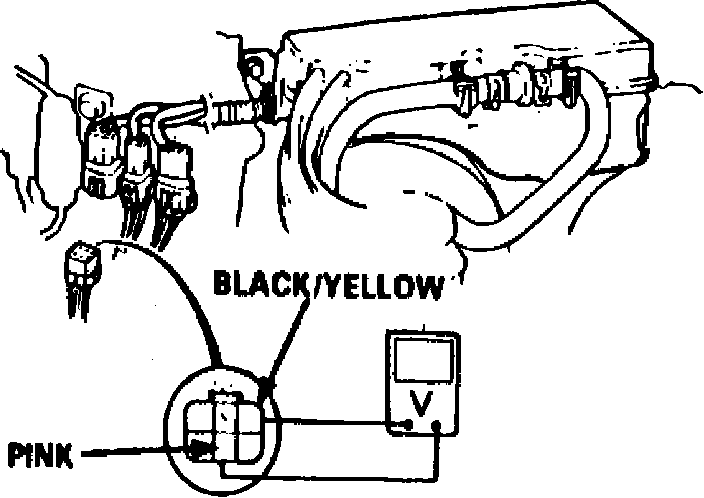

Air Injection: Testing and Inspection
Fig. 1 Air Injection System Schematic:

This system, Fig. 1, is designed to improve emissions performance by supplying fresh air from the air cleaner into the exhaust manifold, through the air suction valve.
When the air suction control solenoid valve is activated by the ECU, manifold vacuum raises the air suction valve diaphragm, allowing fresh air from the air cleaner to be routed to the exhaust manifold. Activation of the solenoid valve is delayed, depending on coolant temperature, anywhere from 10-60 seconds after the engine is started.
Testing
AIR SUCTION VALVE
1. Check all applicable vacuum hoses for cracks, blockage or improper connection. Repair or replace hoses as necessary.
2. Start engine and allow to reach normal operating temperature (cooling fan cycling).
3. Stop, then restart engine. Within 20 seconds of restart, check for suction noise from air suction valve with engine idling.
4. If suction noise is not evident, disconnect vacuum hose from top of valve and check for vacuum within 20 seconds of restart using suitable vacuum gauge. Vacuum should be present. If vacuum is not present, refer to steps 1 through 5 of ``Solenoid Valve'' testing procedure. If vacuum is present, replace air suction valve and retest.
5. Stop, then restart engine and check for suction noise from suction valve 30 seconds after restart. No suction noise should be evident. If suction noise is evident, refer to steps 6 through 9 of ``Solenoid Valve'' testing procedure.
Fig. 2 No. 5 Vacuum Hose Location:

Fig. 3 6 Pin Connector Terminal Identification:

SOLENOID VALVE
1. Start engine and allow to reach normal operating temperature (cooling fan cycling).
2. Disconnect No. 5 vacuum hose from intake manifold, Fig. 2, and check for vacuum using suitable vacuum gauge. If no vacuum is present, check for defective vacuum port. If vacuum is present, check hose for blockage, cracks or improper connection. If hose is OK, reconnect it to manifold.
3. Disconnect 6 pin connector in engine compartment, then connect voltmeter positive lead to black/yellow terminal and negative lead to pink terminal, Fig. 3.
4. Start engine and check for voltage within 20 seconds after restart. If voltage is evident, replace solenoid valve and retest. If no voltage is present, proceed to next step.
5. Connect positive lead of voltmeter to black/yellow terminal of connector and negative lead to body ground, then check for voltage within 20 seconds after restart. If no voltage is present, repair open in black/yellow wire between solenoid valve and No. 11 fuse. If voltage is present, check for open in pink wire between solenoid valve and ECU, and repair as necessary. If wire is OK, check ECU for proper operation.
6. Restart engine and allow to reach normal operating temperature.
7. Disconnect 6 pin connector in engine compartment, then connect voltmeter positive lead to black/yellow wire terminal and negative lead to Pink wire terminal.
8. Check for voltage with engine idling and within 30 seconds after engine restart.
9. If no voltage is evident, replace solenoid valve and retest. If voltage is present, check for short in pink wire between solenoid valve and ECU, and repair as necessary. If wire is OK, check ECU for proper operation.